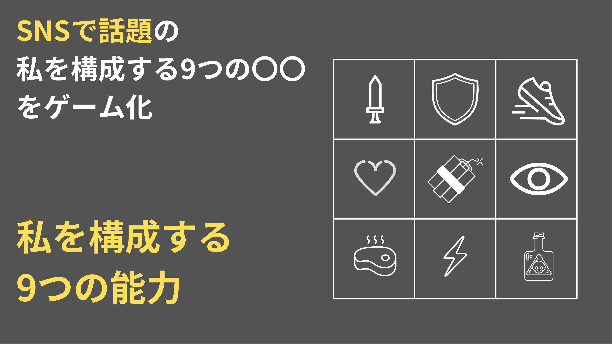
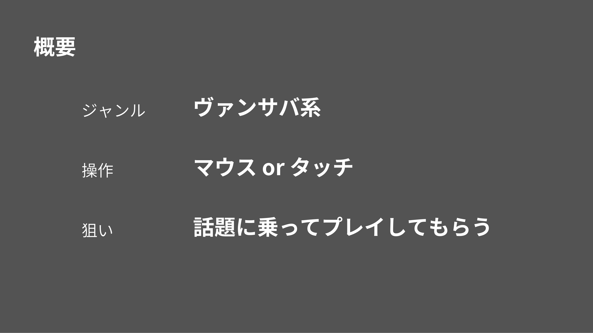
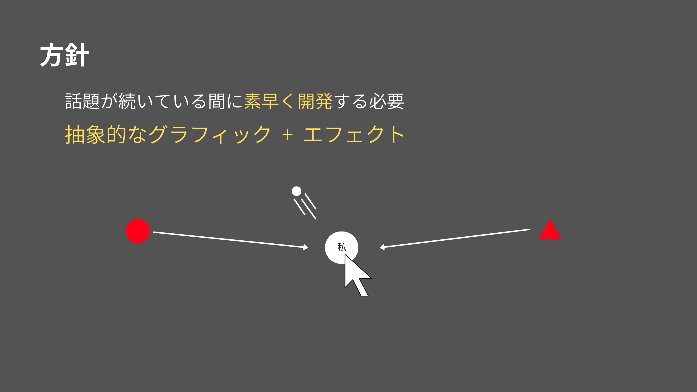
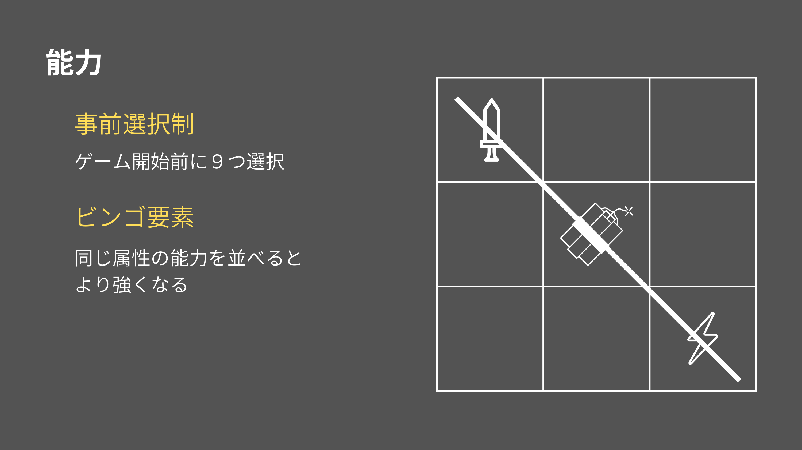
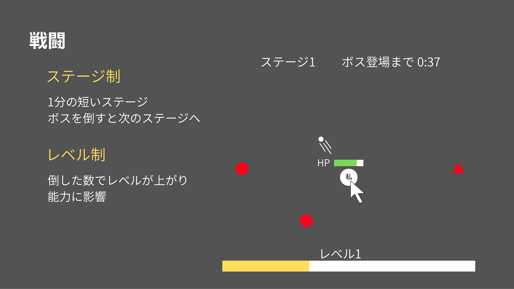
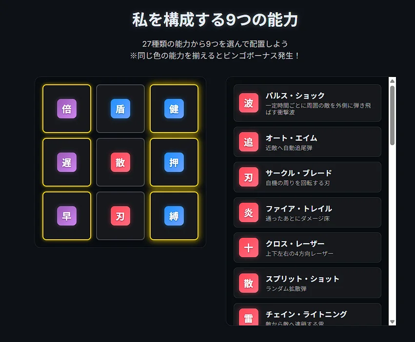
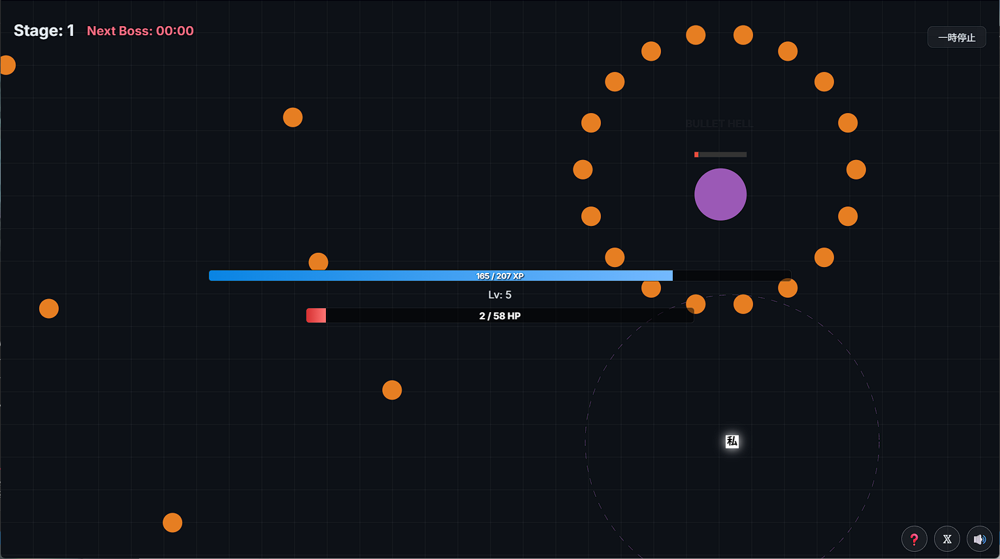
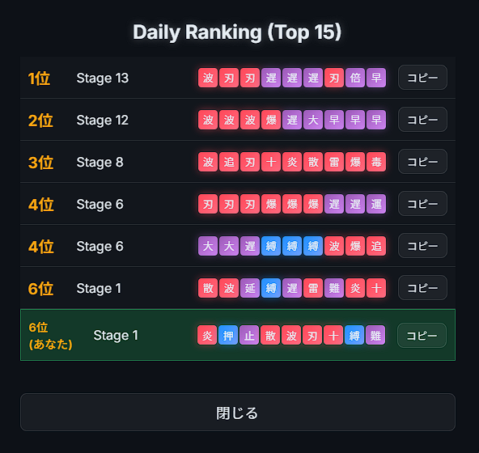
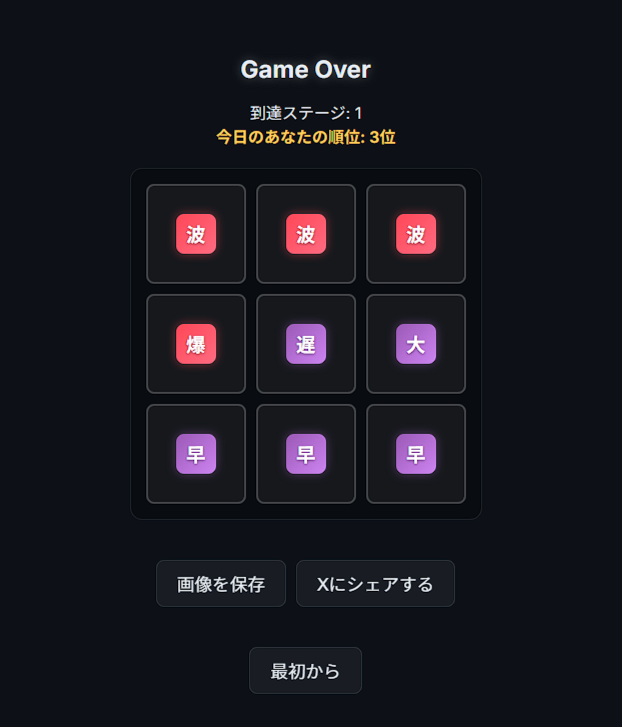

私を構成する9つの能力
プレイ動画
企画書
開発初期の簡易的な企画書です。





作品紹介
SNSの「9枚の画像」を模した、3×3のグリッドに能力をハメ込む画面が特徴のヴァンサバライクなサバイバル全方位アクションゲームです。
流行に素早く乗るため、Antigravityを使い初期バージョンを開発期間1日でリリースしました。
PCとスマホの両対応で、プラットフォームに依存しない表示・操作を実現しています。

工夫点・技術的特徴
多くの能力・配置ボーナスで組み合わせを考えるデッキ構築ゲームとしての面白さを出しつつ、ヴァンサバライクでもゲーム中はノンストップで進められる工夫をしています。
色で属性がわかれ、同じ属性（攻撃・防御・特殊）を縦横に並べるとリーチや威力が上がる「ビンゴ要素」があります。斜めは他のビンゴを邪魔する分強く強化できます。

また、コミュニティ性強化のための工夫として、リザルト画面からX(旧Twitter)へハッシュタグ「#私を構成する9つの能力」付きで投稿できる機能を実装しています。
クエリストリングで能力を埋め込めるようにすることで、投稿されたリンクやランキングから他プレイヤーの能力の組み合わせ（ビルド）を簡単に共有・コピーできるようになっています。
ランキング機能にはゲーム用BaaSであるMicrosoft PlayFabを使用しました。


AntigravityやPlayFabといった新しい技術に挑戦しながら、アップデートを重ねてより良いゲーム体験を目指して開発を行いました。最終的には、企画書で想定していた以上の作品へと仕上がりました。
作品リンク
ゲームをプレイするGitHubソース